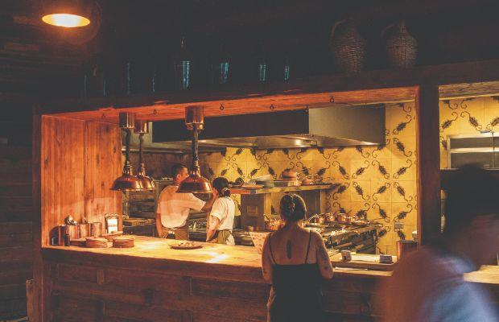

Fauna Valle de Guadalupe
Cocina que rompe fronteras del dúo culinario más apasionante de México


Cocina que rompe fronteras del dúo culinario más apasionante de México
¿Cuál es la historia? El chef David Castro Hussong y la pastelera Maribel Aldaco Silva abrieron Fauna en 2017 después de trabajar y viajar por todo el mundo. Castro nació y creció en Ensenada y siempre había soñado que algún día rendiría homenaje a los ingredientes de su ciudad natal y la región circundante. Hoy en día, la pareja crea menús experimentales que cambian a diario utilizando exclusivamente ingredientes locales y de temporada.
¿Cuál es el escenario? La fauna ha evolucionado mucho desde 2017. Ahora forma parte del proyecto Bruma, que cuenta con un viñedo, una preciosa bodega, un hotel con 15 villas y un B&B con ocho habitaciones. El comedor tiene una gran mesa comunitaria de madera que fue construida para crear un sentido de comunidad entre los comensales. La vista desde esta habitación y la terraza es impresionante, especialmente al atardecer.
¿Qué comeré? Los chefs Castro y Aldaco mezclan ingredientes de manera creativa con resultados increíblemente sabrosos. La lechuga a la plancha con caballa es el ejemplo perfecto. La mejor manera de disfrutar de los platos a la carta es compartiendo, pero también hay un menú degustación con el final feliz de los postres de Aldaco, que llevan a la mesa los ingredientes locales con una técnica espectacular, como se ve en el semifreddo de miel servido con helado de leche y caramelo salado, una creación digna del premio Mejor Pastelero de América Latina 2023, patrocinado por República del Cacao.
Digno de mención: Fauna ganó el premio One To Watch en 2020 y debutó en Latin America's 50 Best Restaurants 2022 con la clasificación más alta entre todos los nuevos lugares, lo que le valió el premio más alto de entrada nueva. En 2023, como el restaurante con mayor ranking de su país, Fauna se corona como El Mejor Restaurante de México.
México 3 km #73, 22760 Francisco Zarco, Valle de Guadalupe, Mexico
+52 646 103 6403